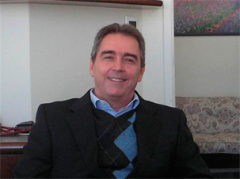

Prof. Dr. Marcus Zulian Teixeira
- Ingeniero Agrónomo egresado de la Escuela Superior de Agricultura Luiz de Queiroz (ESALQ-USP) en 1981.
- Médico egresado de la Facultad de Medicina de la Universidad de São Paulo (FMUSP) en 1991.
- Lato Sensu Graduado en Homeopatía (1994) por la Asociación Paulista de Homeopatía (APH).
- Título de Especialista en Homeopatía (1996) emitido por la Asociación Médica Brasileña (AMB) y la Asociación Médica Homeopática Brasileña (AMHB).
- Doctor en Ciencias Médicas (PhD, 2009), Facultad de Medicina de la Universidad de São Paulo (FMUSP).
- Profesor y coordinador del curso "Fundamentos de la Homeopatía" desde 2003, Facultad de Medicina de la Universidad de São Paulo (FMUSP).
www.homeozulian.med.br
www.novosmedicamentoshomeopaticos.com
Nuevos Medicamentos Homeopáticos: uso de fármacos modernos según el principio de semejanza
Marcus Zulian Teixeira
Ya en Grecia antigua, Hipócrates enseñaba dos abordajes en el tratamiento de las enfermedades: el principio de los contrarios y el principio de los semejantes. El tratamiento basado en el principio de los contrarios utiliza medicamentos con acción contraria o paliativa (“anti”) de los síntomas de la enfermedad (p.ej., antiinflamatorios, antiácidos, antidepresivos, etc.). Éste es el principal abordaje utilizado por la medicina convencional, también conocida como “alopatía”. El tratamiento según el principio de los semejantes es utilizado por la homeopatía y utiliza medicamentos que producen síntomas similares (“homeo”) a los de la enfermedades (p.ej., café produce insomnio y es utilizado homeopáticamente para tratar el insomnio, camomila produce cólicos y es utilizada homeopáticamente para tratar cólicos, belladona produce fiebre y es utilizado homeopáticamente para tratar cuadros febriles, etc.).
Cuando formuló originalmente la homeopatía, en 1796, Samuel Hahnemann basó este principio terapéutico en observaciones cuidadosas de los fármacos contemporáneos en el organismo humano y postuló un “mecanismo de la acción de los fármacos” universal:
“Todo agente que actúa sobre la vitalidad, todo medicamento, modifica más o menos fuerza vital y produce una cierta alteración en la salud del individuo durante un período más o menos largo. Ésta es denominada acción primaria. […] Nuestra fuerza vital intenta oponerle su propia energía a esa acción. Esta acción de resistencia es una propiedad, en efecto, una acción automática de nuestro poder conservador de la vida conocida como acción secundaria o contra-reacción.” (Organon de la medicina, parágrafo 63)
Con el fin de ilustrar ese fenómeno natural, Hahnemann listó las acciones primarias de los medicamentos utilizados en su época y que promovían alteraciones en los diversos sistemas del organismo humano, junto con la acción secundaria del organismo (reacción vital o fuerza de conservación). La acción de esta última neutraliza los trastornos primarios producidos por los fármacos con el fin de mantener el equilibrio del medio interno, o homeostasis:
“[...] Vivacidad excesiva aparece después de usar café fuerte (acción primaria), pero pereza y somnolencia permanecen mucho tiempo después (reacción, acción secundaria) a menos que vuelvan a ser removidas brevemente ingiriendo café fresco (paliativo). Después del profundo sueño estuporoso causado por opio (acción primaria), la noche siguiente será todavía más insomne (reacción, acción secundaria). Después de la constipación producida por opio (acción primaria) sobreviene diarrea (acción secundaria); y después de una purga con medicamentos que irritan el intestino, sobreviene constipación de varios días de duración. Y así, de manera semejante, después de la acción primaria de un medicamento en grandes dosis siempre aparece una gran alteración en la salud de una persona sana exactamente opuesto, cuando como ha sido observado una tal cosa realmente existe, provocada por nuestra fuerza vital en su acción secundaria.” (Organon de la medicina, parágrafo 65)
Basado en este postulado o “ley natural”, la homeopatía utiliza la acción secundaria del organismo como reacción terapéutica y le prescribe a los enfermos aquellos medicamentos que producen síntomas semejantes a los trastornos que ellos mismos causan (principio de semejanza terapéutica), así estimula al organismo a reaccionar en contra de su propia enfermedad.
Aunque poco divulgada por la farmacología, pues atenta contra el tratamiento convencional, esta misma acción secundaria o reacción homeostática del organismo ha sido observada al usar varios tipos de fármacos modernos paliativos (antipáticos o enantiopáticos) como efecto rebote o reacción paradojal del organismo. Hemos estudiado sistemáticamente el efecto rebote de los fármacos modernos durante la última década y así pudimos confirmar mediante evidencias científicas tanto el postulado de Hahnemann (la acción primaria de un fármaco es seguida por la acción secundaria y opuesta del organismo) como el principio homeopático de curación [1-8].
Como ejemplo: fármacos clásicamente utilizados en el tratamiento de la angina de pecho (β-bloqueantes, bloqueantes de los canales de calcio, nitratos, etc.) que son benéficos en su efecto primario (anti-angina) pueden provocar un aumento paradojal de la frecuencia e intensidad del dolor torácico cuando las dosis son suspendidas o tomadas de modo irregular, y a veces resistentes a toda medida terapéutica. Fármacos utilizados en el tratamiento de la hipertensión arterial (agonistas α-2, β-bloqueadores, inhibidores ACE, inhibidores MAO, nitratos, nitroprusiato sódico, hidralacina, etc.) pueden provocar hipertensión arterial rebote como reacción del organismo al estímulo primario; fármacos antiarrítmicos (adenosina, amiodarona, β-bloqueantes, bloqueantes de los canales de calcio, disopiramida, fleicanida, lidocaína, mexiletina, moricizina, procainamida, quinidina, digital, etc.) pueden provocar una exacerbación rebote de las arritmias ventriculares basales cuando se suspende el tratamiento. Fármacos anticoagulantes (argatroban, bezafibrato, heparina, salicilatos, warfarina, clopidogrel, etc.), utilizados debido a su efecto primario en la profilaxis de la trombosis, pueden provocar complicaciones trombóticas como reacción paradojal del organismo.
Con respecto a psicofármacos como ansiolíticos (barbitúricos, benzodiacepinas, carbamatos, etc.), hipnótico-sedantes (barbitúricos, benzodiacepinas, morfina, prometacina, zopiclona, etc.), estimulantes del sistema nervioso central (amfetaminas, cafeína, cocaína, mazindol, metilfenidato, etc.), antidepresivos (tricíclicos, inhibidores MAO, inhibidores de la recaptación de serotonina, etc.) o antipsicóticos (clozapina, fenotiazinas, haloperidol, pimozida, etc.), la reacción paradojal del organismo puede ser observada junto a la tentativa de mantener la homeostasis orgánica y así provoca la aparición de síntomas contrarios a los esperados en función de su uso terapéutico primario, que consiguientemente empeoran el cuadro clínico inicial.
Los fármacos con acción primaria antiinflamatoria (corticoides, ibuprofeno, indometacina, paracetamol, salicilatos, etc.) pueden desencadenar reacciones paradojales del organismo que aumentan la inflamación y la concentración de sus mediadores plasmáticos. Los fármacos con acción primaria analgésica (cafeína, bloqueadores de los canales de calcio, clonidina, ergotamina, metisergida, opiáceos, salicilatos, etc.) pueden provocar marcada hiperalgesia como efecto rebote. Los diuréticos (furosemida, torasemida, triamtereno, etc.), utilizados enantiopáticamente para disminuir el volumen plasmático (edema, hipertensión arterial insuficiencia cardíaca congestiva, etc.) pueden provocar retención rebote de sodio y potasio y consecuentemente aumentan el volumen plasmático basal. Fármacos primariamente utilizados como anti-dispépticos (antiácidos, antagonistas H2, misoprostol, sucralfato, inhibidores de la bomba de protones, etc.) en el tratamiento de gastritis y úlcera gastroduodenal pueden provocar, después de la disminución primaria de la acidez, aumento rebote de la producción gástrica de ácido clorhídrico, llevando eventualmente a la perforación de úlceras gastroduodenales crónicas. Los broncodilatadores (adrenérgicos, cromoglicato sódico, epinefrina, ipratropio, nedocromil, salmeterol, formoterol, etc.) utilizados en el tratamiento del asma bronquial pueden empeorar la broncoconstricción como respuesta paradojal del organismo a la suspensión del tratamiento. Etc.
Aunque el efecto rebote o reacción paradojal del organismo generalmente sucede en un pequeño número de personas en función de sus características idiosincrásicas, sus efectos pueden ser muy importantes (en intensidad y duración) lo que brinda mayor justificación a su uso homeopático.
Admitiendo que la premisa principal del tratamiento homeopático es el uso de medicamentos que producen síntomas similares a los de la enfermedad que se desea curar, se puede emplear toda clase de medicamentos, naturales o sintéticos, en dosis ponderales o infinitesimales, siempre que se observe el principio de similitud. Consecuentemente, los fármacos “alopáticos” también pueden ser utilizados según el principio de semejanza terapéutica cuando los efectos de su acción primaria (terapéuticos, adversos y colaterales) son similares a los síntomas del paciente. De esta manera, aprovechamos el efecto rebote de los fármacos modernos con el fin de curar.
Ejemplificando esta posible indicación alternativa [9] de innúmeras clases de fármacos modernos según el principio homeopático, decenas de fármacos que aumentan la presión arterial en su efecto primario (adalimumab, ciclosporina, dopamina, antiinflamatorios, etc.) pueden ser usados homeopáticamente para tratar la hipertensión arterial, puesto que los demás efectos patogénicos de la droga muestran similitud con la individualidad del paciente. Fármacos que aumentan la glucemia (amprenavir, corticotropina, diazóxido, estrógenos, etc.) pueden ser utilizados homeopáticamente para tratar hiperglucemia/diabetes. Fármacos que producen inmunosupresión (ciclosporina, corticoides, inmunosupresores, etc.) pueden ser utilizados para estimular el sistema inmune en pacientes inmunodeprimidos. Fármacos que producen alteraciones en la atención/concentración (amantadina, interferones, topiramato, etc.) pueden ser utilizados para mejorar el trastorno por déficit de atención en niños. Etc.
Basados en la premisa de Hahnemann, desde 2003 hemos propuesto sistemáticamente emplear los fármacos modernos según el principio homeopático de curación [10,11]. Este proyecto está detalladamente descripto en dos artículos recientemente publicados en los periódicos científicos Homeopathy [12] y International Journal of High Dilution Research [13], donde también se indican sus bases en los principios homeopáticos.
Para aplicar esta propuesta en la práctica, compilamos una Materia Médica Homeopática de Fármacos Modernos que incluye todos los efectos primarios (terapéuticos, adversos y colaterales) de 1.250 fármacos “alopáticos” tal como descriptos en la Farmacopea de los Estados Unidos (The United States Pharmacopeia Dispensing Information - USP DI, 2004), siguiendo la distribución de capítulos de la materia médica homeopática tradicional.
Para facilitar la selección del medicamento homeopático individualizado (similar a la totalidad de síntomas del paciente), que es el requisito esencial para la seguridad y éxito terapéutico de lo tratamiento homeopático, el paso siguiente consistió en elaborar un Repertorio Homeopático de Fármacos Modernos, donde los síntomas y sus medicamentos correspondientes están organizados de modo análogo al repertorio homeopático clásico.
Intitulado Nuevos Medicamentos Homeopáticos: Uso de Fármacos Modernos según el Principio de Semejanza, este proyecto comprende tres partes: (1) Fundamentación Científica del Principio de Semejanza en la Farmacología Moderna; (2) Materia Médica Homeopática de Fármacos Modernos; y (3) Repertorio Homeopático de Fármacos Modernos.
Para facilitar acceso global a este proyecto, los tres trabajos, que cubren millares de páginas, están disponibles en un sitio web bilingüe (inglés y portugués). Este sitio es fácilmente accesible y gratuito, basta registrar nombre, profesión y dirección de correo electrónico para recibir la contraseña. De esta manera, el protocolo podrá ser analizado y utilizado por homeópatas de todo el mundo:
www.nuevosmedicamentoshomeopaticos.com
Para que este método se transforme en rutina homeopática, es necesario que la comunidad homeopática se nuclee alrededor de este proyecto: los médicos para aplicarlo en su praxis clínica y describir los resultados (reportes de casos), los farmacéuticos para preparar los medicamentos homeopáticos correspondientes y los investigadores para diseñar protocolos de investigación.
Referencias Bibliográficas:
- Teixeira MZ. Semelhante cura semelhante: o princípio de cura homeopático fundamentado pela racionalidade médica e científica. São Paulo: Editorial Petrus, 1998. Disponible en: http://pesquisa.bvs.br/regional/resources/hom-8932.
- Teixeira MZ. Similitude in modern pharmacology. British Homeopathic Journal. 1999; 88(3): 112-20. Disponible en: http://www.ncbi.nlm.nih.gov/pubmed/10449051.
- Teixeira MZ. Evidence of the principle of similitude in modern fatal iatrogenic events. Homeopathy. 2006; 95(4): 229-236. Disponible en: http://www.ncbi.nlm.nih.gov/pubmed/17015194.
- Teixeira MZ. NSAIDs, Myocardial infarction, rebound effect and similitude. Homeopathy. 2007; 96(1): 67-68. Disponible en: http://www.ncbi.nlm.nih.gov/pubmed/17227752.
- Teixeira MZ. Bronchodilators, fatal asthma, rebound effect and similitude. Homeopathy. 2007; 96(2): 135-137. Disponible en: http://www.ncbi.nlm.nih.gov/pubmed/17437943.
- Teixeira MZ. Antidepressants, suicidality and rebound effect: evidence of similitude? Homeopathy. 2009; 98(2): 114-121. Disponible en: http://www.ncbi.nlm.nih.gov/pubmed/19358965.
- Teixeira MZ. Statins withdrawal, vascular complications, rebound effect and similitude. Homeopathy. 2010; 99(4): 255-262. Disponible en: http://www.ncbi.nlm.nih.gov/pubmed/20970095.
- Teixeira MZ. Rebound acid hypersecretion after withdrawal of gastric acid suppressing drugs: new evidence of similitude. Homeopathy. 2011; 100(3): 148-156. Disponible en: http://www.ncbi.nlm.nih.gov/pubmed/21784332.
- Ministério da Saúde. Agencia Nacional de Vigilância Sanitária. Institucional, Medicamentos, Registro de Medicamentos. Como a Anvisa vê o uso off label de medicamentos. Brasília, 23 de maio de 2005. Disponible en: http://www.anvisa.gov.br/medicamentos/registro/registro_offlabel.htm#.
- Teixeira MZ. Homeopathic use of modern medicines: utilisation of the curative rebound effect. Medical Hypotheses. 2003; 60(2): 276-283. Disponible en: http://www.ncbi.nlm.nih.gov/pubmed/12606247.
- Teixeira MZ. 'Paradoxical strategy for treating chronic diseases': a therapeutic model used in homeopathy for more than two centuries. Homeopathy. 2005; 94(4): 265-266. Disponible en: http://www.ncbi.nlm.nih.gov/pubmed/16226210.
- Teixeira MZ. New homeopathic medicines: use of modern drugs according to the principle of similitude. Homeopathy. 2011; 100(4): 244-252. Disponible en: http://www.ncbi.nlm.nih.gov/pubmed/21962199.
- Teixeira MZ. Homeopathic use of modern drugs: therapeutic application of the organism paradoxical reaction or rebound effect. International Journal of High Dilution Research. 2011; 10(37): 338-352. Disponible en: http://www.feg.unesp.br/~ojs/index.php/ijhdr/article/view/456/542.
* Médico Homeópata, Ph.D., investigador y profesor de medicina homeopática en la Faculdade de Medicina da Universidade de São Paulo (FMUSP) / marcus@homeozulian.med.br / www.homeozulian.med.br / www.fm.usp.br/homeopatia / www.nuevosmedicamentoshomeopaticos.com
REGRESAR